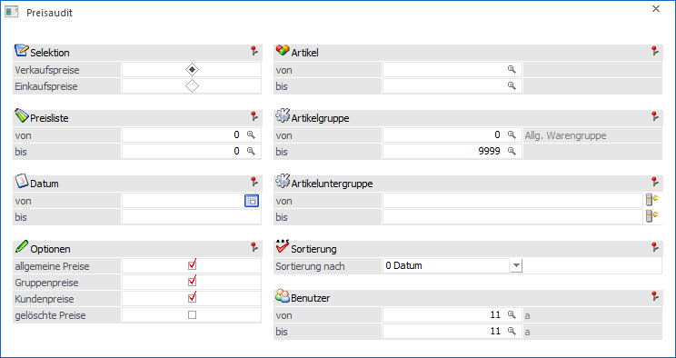
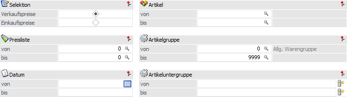
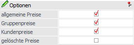
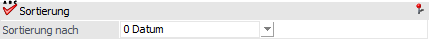
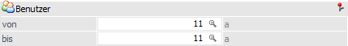
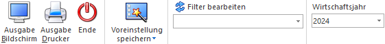

Mit Hilfe der Auswertung "Preisaudit", welche über…
1 WinLine FAKT
1 Auswertungen
1 Artikellisten
1 Preisaudit
… aufgerufen werden kann, können protokollierte Änderungen aus der Preistabelle ausgewertet werden.
Hinweis
Um die Auswertung nutzen zu können, muss das Preisaudit aktiviert worden sein. Die Aktivierung findet wiederum über das "Variablen Audit" des WinLine ADMIN statt (WinLine ADMIN - Audit - Variablen Audit - Tabelle "043 - Preisliste"). Des Weiteren muss eine entsprechende WinLine Lizenz (SAVE-Lizenz) vorhanden sein.

Die Ausgabe kann durch folgende Kriterien eingeschränkt bzw. beeinflusst werden:
Selektion

Ø Selektion
Folgende Einschränkungskriterien stehen zur Verfügung:
ü Verkaufspreise / Einkaufspreise
ü Preisliste von / bis
ü Artikelnummer von / bis
ü Datum von / bis
ü Artikelgruppe von / bis
ü Artikeluntergruppe von / bis
Optionen

Ø allgemeine Preise / Gruppenpreise / Kundenpreise / gelöschte Preise
Über die Optionen kann gesteuert werden, welche Preistypen (allgemeine Preise, Gruppenpreise, Kundenpreise) angedruckt werden sollen. Zusätzlich kann die Ausgabe von bereits gelöschten Preisen aktiviert werden.
Hinweis
Damit "gelöschte Preise" ausgegeben werden können, muss im Variablen Audit die Option "Einf/Lösch" aktiviert worden sein.
Sortierung

Ø Sortierung nach
Die Sortierung der Anzeige kann nach den folgenden Kriterien erfolgen:
ü 0 - Datum
ü 1 - Konto
ü 2 - Preistyp
ü 3 - Artikel
Benutzer

Ø Benutzer
An dieser Stelle definiert werden, wessen Neuanlagen /Änderungen / Löschungen ausgegeben werden sollen.
Hinweis
Die Möglichkeit einer Einschränkung auf bestimmte Benutzer (von / bis) steht nur für jene WinLine-Benutzer zur Verfügung, welche die entsprechende Berechtigung aufweisen (Datenadministrator oder "Volladministrator"). Handelt es sich bei dem aktuellen Benutzer um einen Administrator, so werden automatisch nur die Daten des jeweiligen Benutzers ausgewertet.
Buttons

Ø Ausgabe Bildschirm
Mit Hilfe des Buttons "Ausgabe Bildschirm" oder der Taste F5 wird die Auswertung am Bildschirm ausgegeben.
Ø Ausgabe Drucker
Durch Anwahl des Buttons "Ausgabe Drucker" wird die Auswertung am Drucker ausgegeben.
Ø Ende
Durch Drücken des Buttons "Ende" bzw. der Taste ESC wird das Fenster geschlossen.
Ø Voreinstellung speichern
Durch Anwahl dieses Buttons erfolgt eine benutzerspezifische Speicherung aller im Fenster getätigten Einstellungen. Diese sogenannten "Voreinstellungen" können jederzeit wieder abgerufen werden und ermöglichen dadurch ein schnelleres und zielorientierteres Arbeiten (nähere Informationen entnehmen Sie bitte dem Kapitel "Die Voreinstellungen").
Ø Filter bearbeiten
Durch Anklicken des Buttons "Filter bearbeiten" kann das Preisaudit nach frei definierbaren Kriterien eingeschränkt werden.
Ø Wirtschaftsjahr
Über die Auswahlbox kann das Wirtschaftsjahr gewählt werden, für welches die Auswertung erfolgen soll. Damit können die Daten aus den Vorjahren angezeigt werden, ohne dass das Fenster geschlossen und ein manueller Wirtschaftsjahreswechsel vorgenommen werden muss.